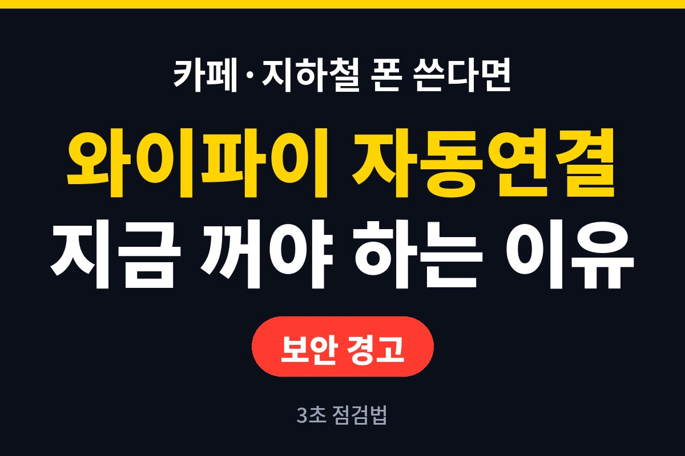
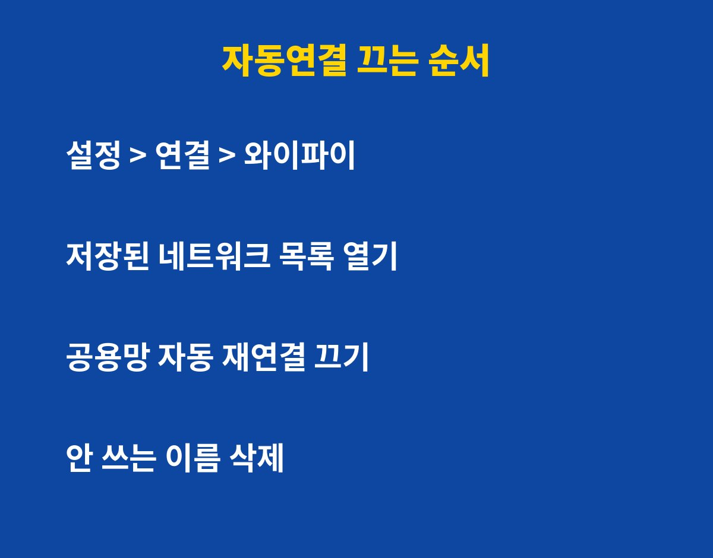
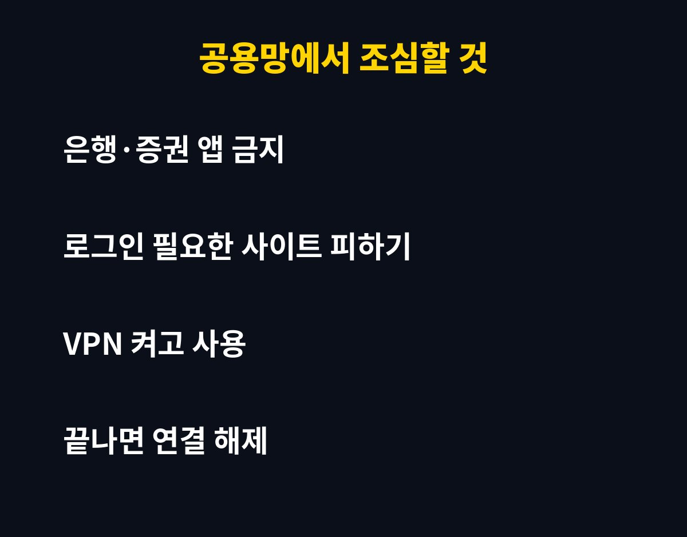

와이파이 자동연결, 지금 켜져 있나요? 카페나 지하철에서 폰을 쓴다면 내가 모르는 사이 낯선 공용망에 붙어 있을 수 있는데, 그게 왜 위험한지 바로 알려드릴게요.
한 번 접속했던 와이파이는 폰이 이름을 기억해 두었다가, 같은 이름이 보이면 알아서 다시 붙어요. 편하긴 한데 문제는 폰이 이름만 보고 판단한다는 거예요.
누군가 카페 와이파이와 똑같은 이름의 가짜 공유기를 만들어 두면, 폰은 진짜인 줄 알고 접속해 버릴 수 있어요. 그러면 내가 보내는 데이터가 그 사람 장비를 거쳐 가게 되는 거죠.
특히 이름이 흔한 무료 와이파이일수록 가짜를 만들기 쉬워서, 한 번이라도 연결한 적 있다면 한 번쯤 점검해 보는 게 좋아요.
가장 조심할 때는 로그인이 필요한 일을 공용망에서 할 때예요. 은행 앱, 증권 앱, 쇼핑몰 결제, 회사 메일 같은 것들이죠.

요즘 대부분의 앱은 통신을 암호화해서 바로 털리는 일은 드물어요. 그래도 가짜 로그인 화면으로 유도하는 수법이 섞이면 이야기가 달라져요. 비밀번호를 직접 입력하게 만드는 방식이거든요.
그래서 공용망에서는 중요한 로그인은 미루고, 꼭 해야 한다면 내 데이터 통신으로 바꾸는 게 제일 안전해요.
기종마다 메뉴 이름은 조금 달라도 흐름은 비슷해요. 아래 표대로 한 번만 정리해 두면 돼요.
| 할 일 | 어디서 | 효과 |
| 저장된 목록 열기 | 설정 > 연결(네트워크) > 와이파이 | 내가 붙었던 곳 한눈에 확인 |
| 공용망 자동 재연결 끄기 | 각 네트워크 상세 설정 | 같은 이름에 알아서 붙는 것 차단 |
| 안 쓰는 이름 삭제 | 네트워크 > 삭제(잊기) | 가짜 공유기 노출 줄임 |
| VPN 사용 | 보안 앱 또는 설정 | 공용망에서 통신 보호 |

집이나 회사처럼 내가 직접 관리하는 와이파이는 자동연결을 켜 둬도 괜찮아요. 꺼야 하는 건 카페, 지하철, 호텔, 행사장처럼 누구나 쓰는 곳이에요.
급할 때는 쓸 수 있어요. 대신 몇 가지만 지키면 위험이 확 줄어요.
첫째, 와이파이 이름이 맞는지 직원에게 물어보세요. 둘째, 비밀번호 없는 열린 망이면 로그인이 필요한 일은 하지 마세요. 셋째, 다 쓰면 연결을 끊고 목록에서 삭제해 두세요.
넷째, 접속하자마자 뜨는 인증 팝업이나 앱 설치 안내는 눌러보지 마세요. 정상 와이파이는 보통 앱을 깔라고 하지 않아요.
지금 폰의 와이파이 목록을 열어서, 기억 안 나는 이름부터 지워 보세요. 1분이면 끝나요. 한 번 정리해 두면 앞으로 낯선 곳에서도 마음이 훨씬 편해요.
이 글이 도움이 됐다면 구독해 두세요. 폰 보안과 생활 IT 꿀팁을 계속 쉽게 풀어드릴게요.
기사·공식 발표 기준이며 출시·가격 정보는 바뀔 수 있어요.